學習筆記 · candle-by-candle · TraderxB, LGR Traders 2022
整理自Syllabus教材、SSSL補充講義、9支影片的本機轉錄逐字稿，以及一份2022-11-30的Discord即時問答逐字稿。每條規則都標出來源，沒查到根據的東西不會寫在這裡。章節依教學順序排列：方向（Module 1）先於進場（Module 2），跟xB自己反覆強調的優先順序一致。
目錄是按主題分類，不是按學習難度排的。如果從零開始，建議跳著讀，而不是照第01節讀到底：
xB在2022-12-04的Discord留言裡明講，自己後悔太早公開「5 Phase Expansion Cycle」——太多學員把它看得太重。真正任何時候都要優先依賴的，是LG to LG跟Aggregation Model。
整套系統最底層的世界觀。核心命題：市場移動是流動性的函數。交易所不是中立的撮合方，它們靠價差跟內部流動性賺錢，一旦偵測到動能（momentum），會啟動「price engine」把買賣價一路推到能吃到足夠訂單為止——這就是為什麼會有大wick跟跳空。
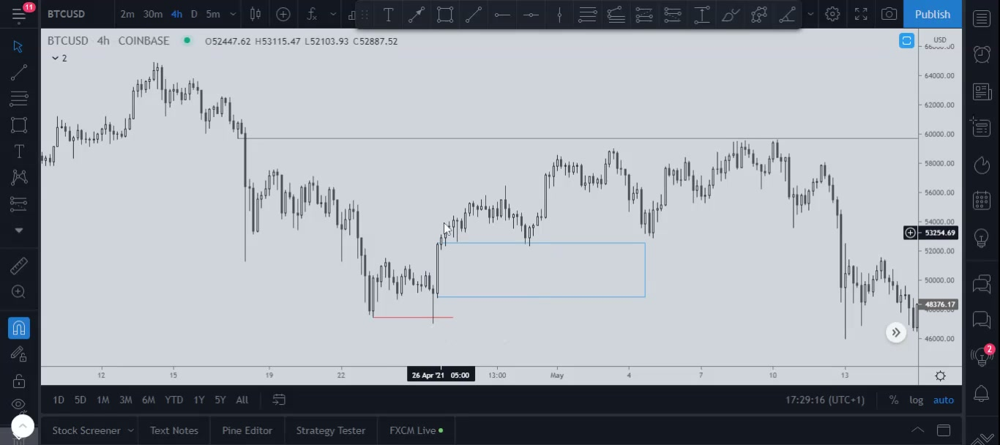
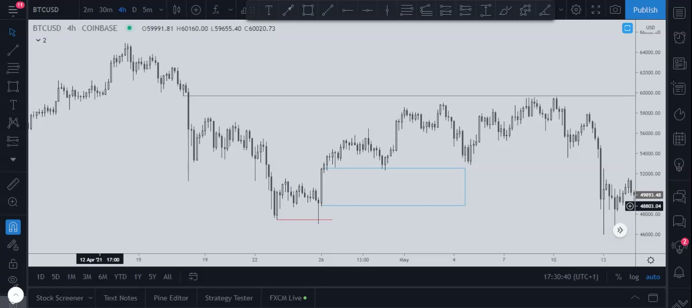
四步驟的節奏控制器，決定「現在該react還是該observe」。不是碎形，不是market reversal訊號本身，四步驟必須全部走完才算數。
把方向判斷的權重量化講清楚，並用一次完整實盤週期走一遍「LGR→sweep→LGC→expansion」。
實盤走一次完整週期：LGR（step1）→sweep（step2）→LGC formation（step3）→inefficient expansion（step4），完成後回到LG to LG找下一個目標，準確度他自估85~90%。
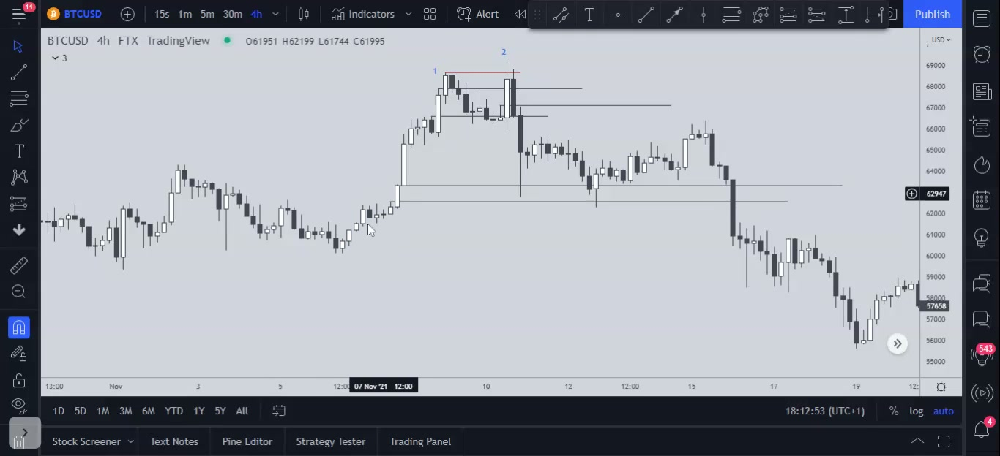
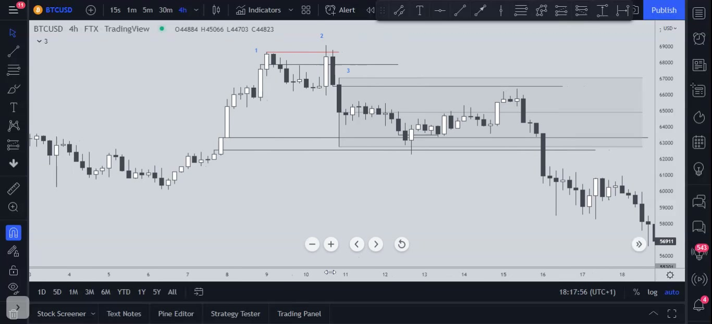
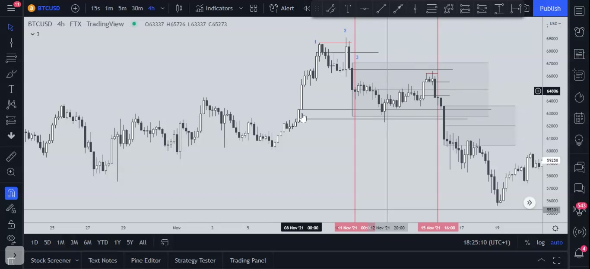
swing，標出裡面所有LG逐K棒操作時，把這套規則刻進肌肉記憶的口訣是「close through it, go to the next one」：大擴張K棒造出的LG＝「objective level」，同一個swing裡沒被測試過的LG敏感度最高；swing內的untested LG都測試完了，就退回前一個swing找下一個目標——這跟下一節「怎麼挑相關的swing」是同一件事的兩種講法。距離大＝這段移動會更expansive，距離的長短本身就是一種資訊，值得放進判斷裡。
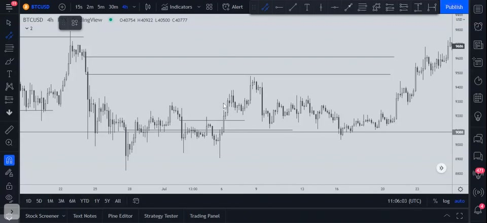
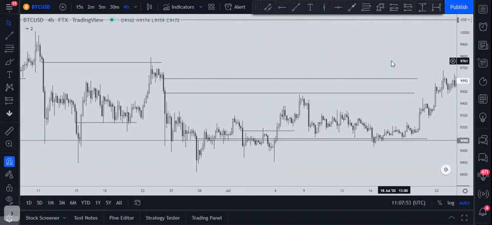
怎麼決定該拿哪個swing來標LG。zoom out到最大常常會找到要花好幾週才會走到的LG，對短線交易沒有實際意義，所以要挑「相對於目前價格有意義」的swing。
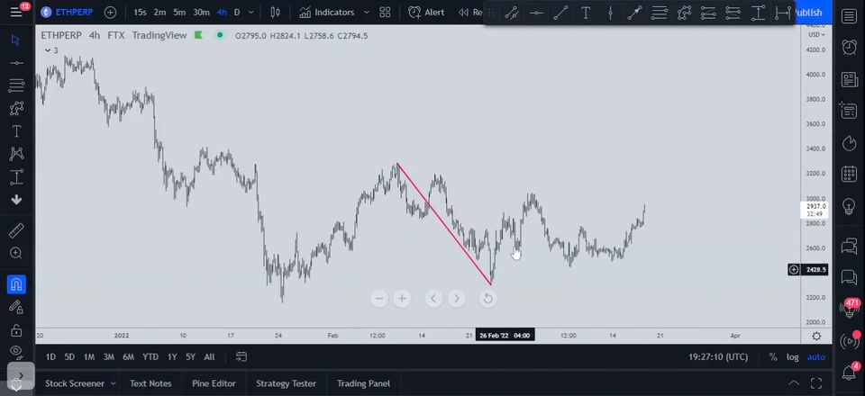
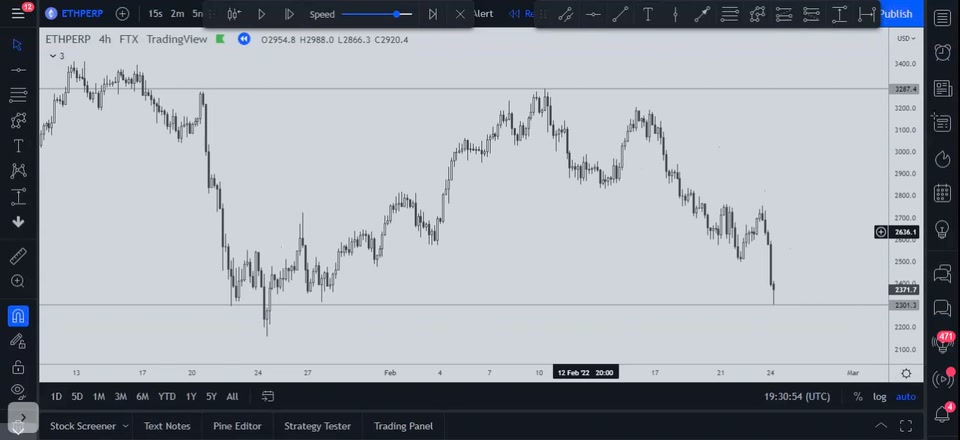
LGC的標記慣例，以及LGC本身也是proportionate（成比例）的兩個判定細節。
把LGR之後的層級精確命名：LGR＝LG Level 1，LGR之後第一個untested LG＝LG Level 2，再往後LG Level 3、4...。這條編號讓「我們現在在追蹤哪一層」變得可以明確指稱，不再只是含糊地說「下一個level」。
關鍵地位差異：「LGR signals a rebalance, but closing through LG Level 2 doesn't signal a rebalance — it signals that something has changed.」LGR只是提示可能要整理，LG Level 2才是真正判定「方向反轉是否成立」的關鍵level，是整套系統裡最重要的單一level。
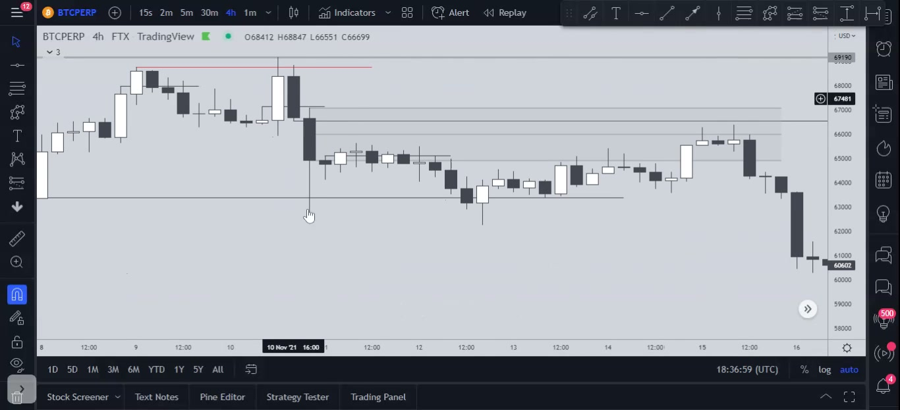
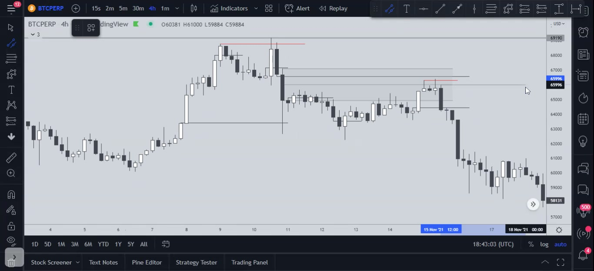
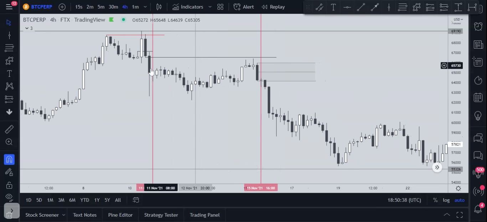
方向模組的總結——把「該看到什麼才能行動」寫成明確的三階段SOP，其中Phase 2的EQ規則是目前所有教材裡唯一出現的地方，資訊密度是全書最高的一節。
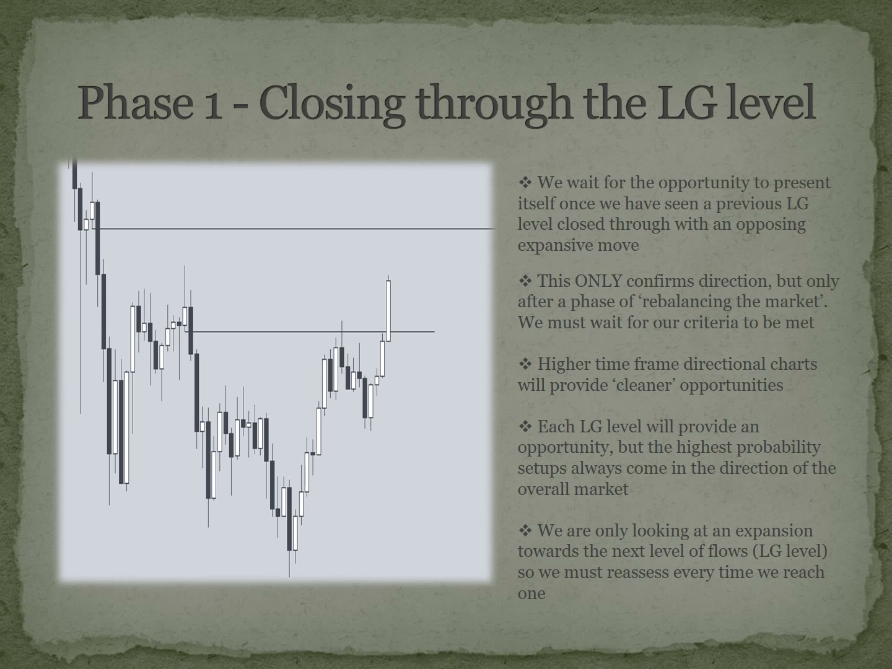
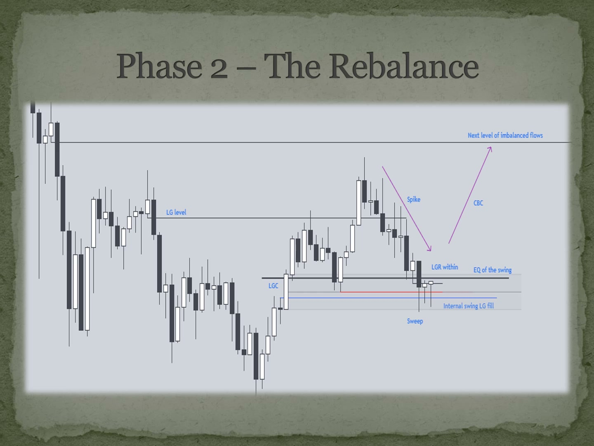
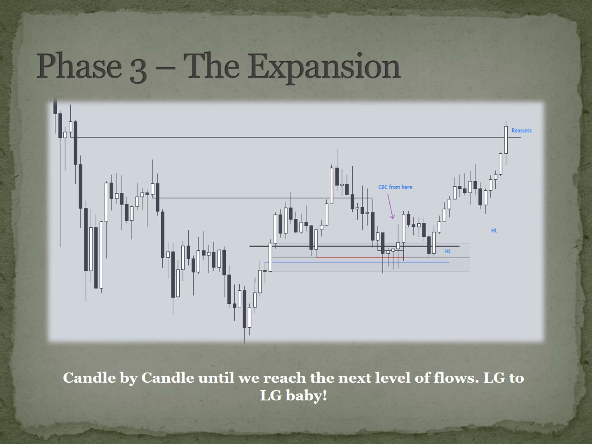
在每個判定為「actionable」的K棒收盤位置畫一條垂直線，三色對應三種狀態：
原文一處瑕疵：PDF裡綠色跟紅色的說明文字一字不差地重複，沒有明講哪個對應多方、哪個對應空方。這裡依照整套教材的顏色慣例（綠漲紅跌）推論，但PDF原文並未明講，這是推論不是原文。
Phase 3寫「切到進場時間框逐K棒操作」，容易誤解成從整個swing開始算。真正的起點更精確：
計時起點是確認出higher low/lower high的那根K棒，不是swing剛形成的地方。信心水位他自己估：「85 to 90%... if you can glean 75 to 80% of the direction then you're good to go」——不用追求100%確定才動作。
最常見的錯誤：看到反方向的LGR就整個進入observation，一路等到出現同方向LGC才肯回來——中間這段其實已經漏掉真正的進場點。
他自己的比例：「I take 80% of my setups at an LGC」。具體做法叫「Parallel EQ」——在LGR的低點/EQ設好alert，等到觸發後直接進場，不是被動等一個完整的反向LGC才肯動作。
整套系統可以收斂成一句話：永遠只在四個層級之一交易——① LGC的High ② LGC的EQ ③ LGC的Low ④ LG level本身。這四層之外的價格波動基本上不值得關注。
Confluence（多層重合）：當這四層裡有多個同時指向同一個價位——例如「LG level」剛好跟「前一根LGC的EQ」疊在一起——訊號強度會顯著提高。這是判斷「這個進場點夠不夠好」最實用的單一判準。
Syllabus裡唯一被列為「選讀、建議先跳過」的一節——方法完全沒變，這只是在LG to LG跟Aggregation Model之上再拉遠一層，幫你看懂「現在這個swing走到循環的哪個階段」。這層週期本身具有fractal（碎形）性質，同一個5階段結構會在每個時間框、甚至同一段expansion內部的更低proportion裡反覆出現。
以下對應一段BTCPERP 4H的完整案例，逐步標出Expansion/Rebalance各階段。
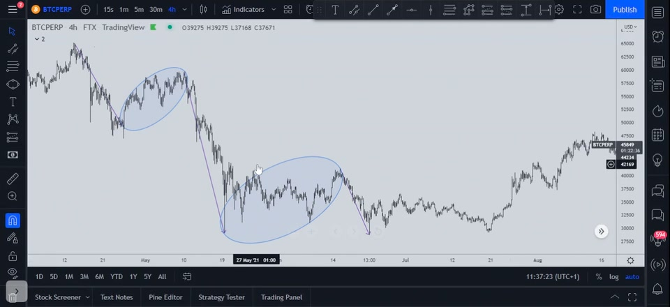
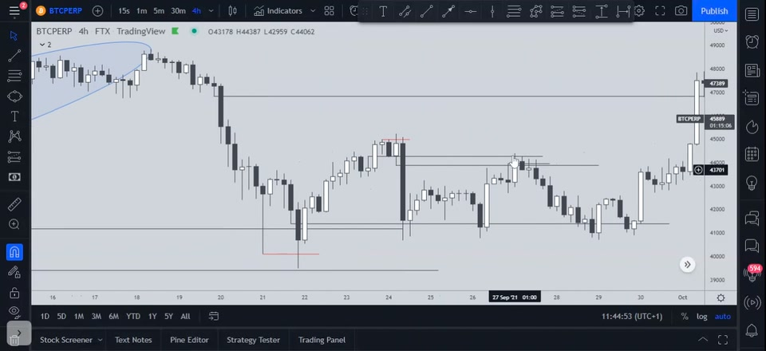
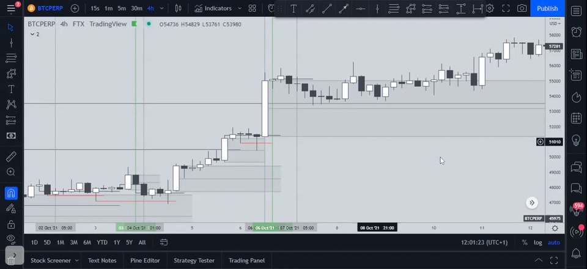
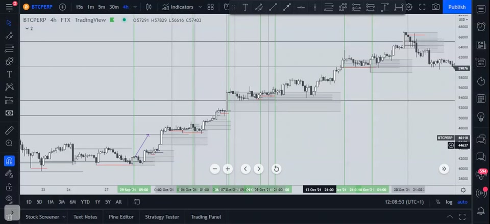
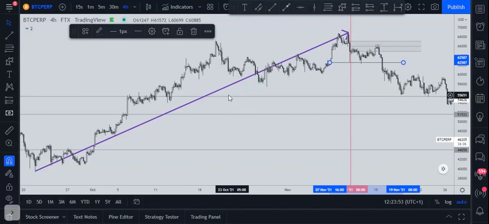
「LGC closing through the swing candle high/low」看似一句話，真實Pine v6原始碼把它拆成兩個必須同時成立（AND）的收盤條件：
Sweep發生後進入「武裝」狀態，武裝期間若出現更深的sweep會持續更新參照點，直到A+B同時成立才觸發進場。
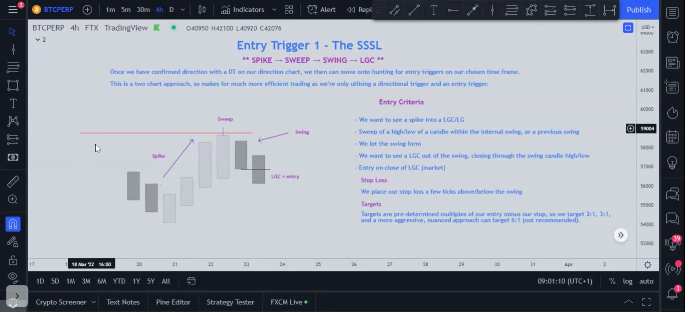
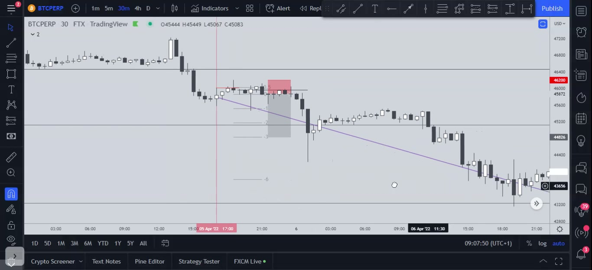
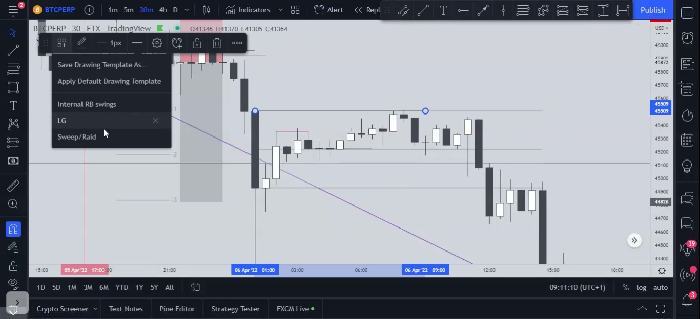
風控與Directional Trigger精修合併成一節，因為兩者本質上都是「SSSL進場之後該怎麼做」——一個管風險，一個管挑DT跟精修進場點。
來自Managing Risk Parameters on a Live SSSL entry。進場後不是死守原始停損到底，而是隨著價格每收盤穿越一個R倍數，就把停損移到「造成那次穿越的那個swing」——不是固定百分比的移動停損，是用結構本身當停損參照。
來自Defining your DTs與Homework - The Sweep DT。他把自己實際在用的DT收斂成三種，難度跟勝率排序如下：
來自Refining DTs and Entries using the same DT。標準SSSL是在LGC收盤當下市價進場；精修版是等LGC出現後，回測（retest）那根LGC的high/EQ/low才進場，用更好的價格換更佳風報比。
來自Refining your Levels for Higher Accuracy。具體工作流程：每週日花10分鐘看Weekly抓level，每天看Daily抓level，再把這些更高時間框的level「轉寫」到4H圖上——4H上剛好跟Weekly/Daily的level重合的位置，就是confluence最強的地方，通常會落在4H LGC的EQ附近。
SSSL的加強濾網，篩掉「反覆被掃（sweep of sweeps）」的假訊號。
xB自己說這是他第一次真正公開「自己實際在做什麼」而不只是講概念。用2021年10月1日~6日的真實週線走勢，示範怎麼在一段確認的Expansion 2裡連續獵殺LGC。
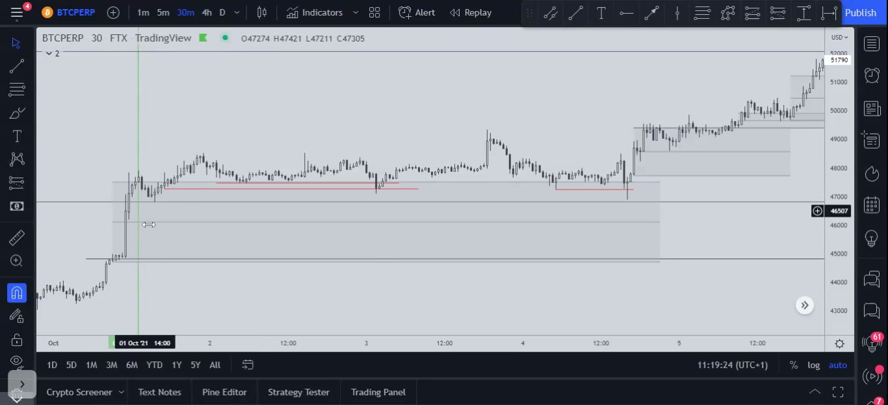
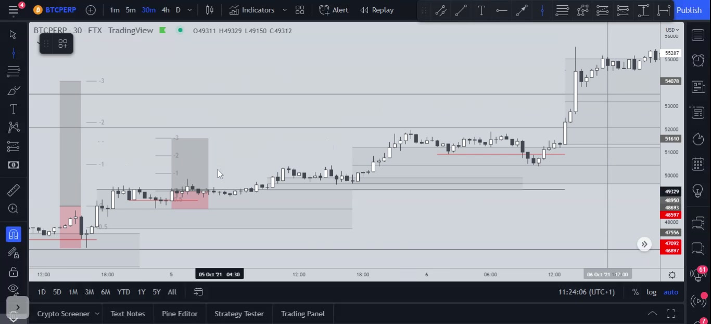
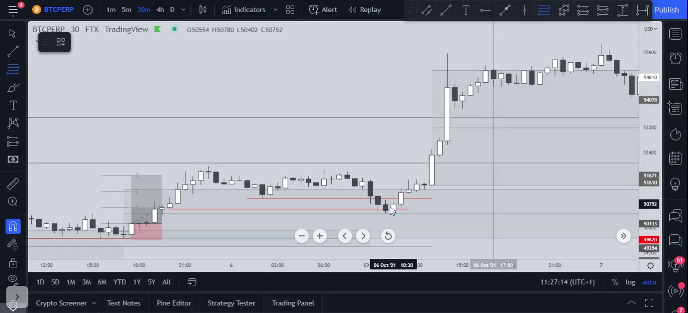
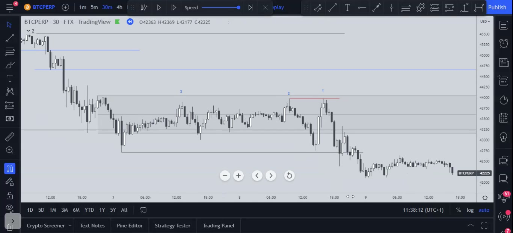
xB跟學員Skadedrengen在真實圖表上來回辯論一整個下午，暴露出教材裡沒寫清楚的判斷灰色地帶。
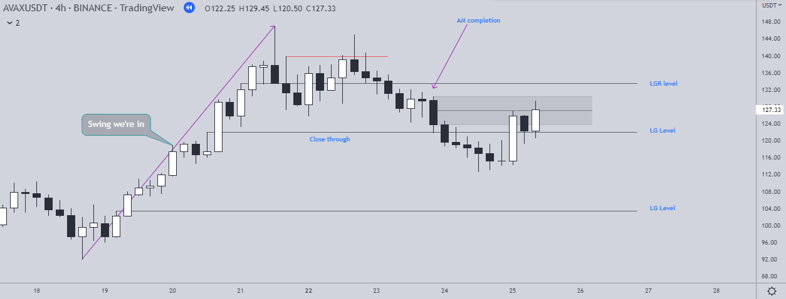
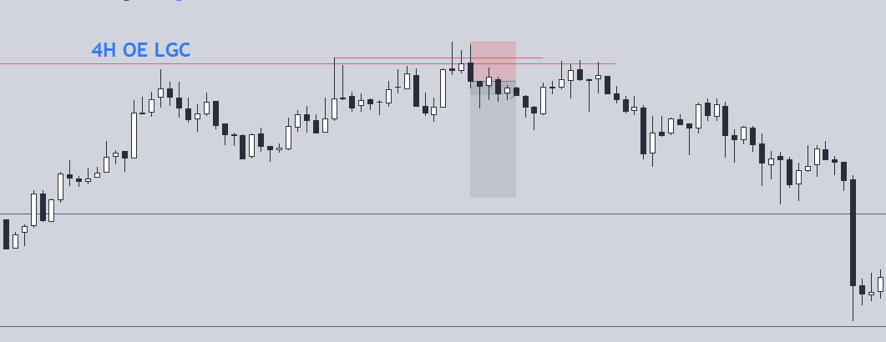
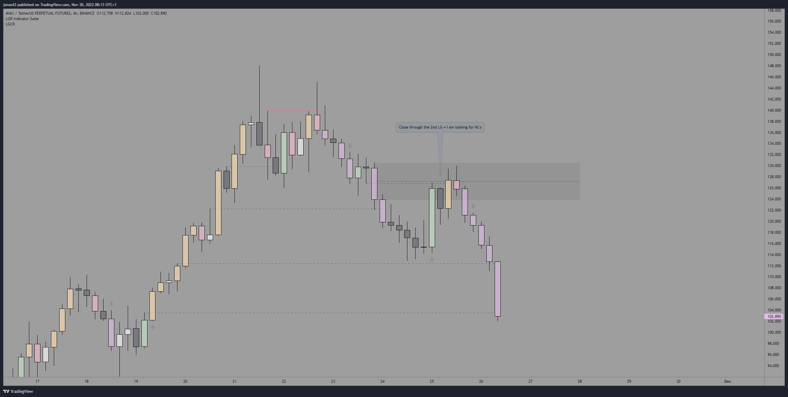
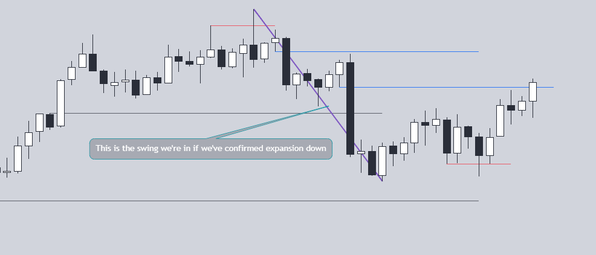
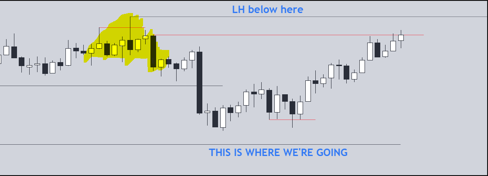
Day chart看到連續兩個strike（D1、D2）才切進4H找H1、H2兩個strike，在H2進場——不吃第一個green cross。
部分有根據：第102頁範例31的筆記寫著「the setup is just a SSSL within a SSSL (30m and 5m setup here)」——高時間框SSSL框出區間、切進低時間框再找一次SSSL進場的drill-down架構，官方教材確實有。
沒有根據：「必須先集齊兩個strike才動作」這個計數規則，翻遍7份PDF跟103頁範例集都沒找到。邏輯上站得住腳（跟LE Candle同樣是拿訊號量換勝率），但目前只能當作Daniel DeGuzman個人在官方框架上疊加的執行紀律，不是xB原始教材寫死的規則。第15節裡xB自己反而傾向不過度精修時間框，兩人的直覺不完全一致。
第04節Aggregation Model跟第11節SSSL常被誤認成同一套四步驟——兩者剛好都是四步，也都用到sweep跟LGC這兩個詞。下圖畫出兩者實際的巢狀關係：方向圖上完整跑一次Aggregation Model（LGR→Rebalance→LGC Formation→Expansion），展開之後才切到進場時間框，在同一段Expansion裡用SSSL（Spike→Sweep→Swing→LGC）反覆觸發——一次外層週期，通常包住好幾次內層進場，呼應第14節「we hunt in LGCs」連續5個setup的實例。這個巢狀框架是跨章節整理出的推論，沒有單一段原文逐字這樣講。
四支BTC即時盤面分析，各自示範一次完整或局部的LG to LG／SSSL操作過程。跟前面章節的抽象規則不同，這裡的重點是「規則在真實雜訊圖表上長什麼樣子」。
BTC即時盤面分析，單一session走完一次完整的「方向判斷→進場判斷」流程。
開場先示範一個不用先畫線就能大致判斷市場狀態的直覺：小實體帶長wick＝efficient（整理），大實體＝inefficient（擴張）。接著標出一段從高點噴出的大LGR，收盤穿越後市場一路efficient噴到高點——因為高點之上沒有untested LG，訂單都在那，價格自然直奔那裡。到了高點出現一根吃盡雙邊range的K棒，隨後大幅噴出穿越前一根LGC，形成新的LGR，這根K棒被明講「必須是DT，沒有模糊空間」，示範什麼叫「毫無疑義的訊號」。
接著具體示範「LG大小本身是資訊」的用法：LGC越大，代表它產生的LG level之後需要的aggregation（整理）時間也越長——大level＝訂單量大＝需要更久時間消化；並用「books are thin」解釋一個level被測試過一次之後敏感度會下降的原因：原本堆在那裡的單邊訂單被掃過之後就被清空了，之後即使價格回來，也不會有一樣多的量在等。全片最具體的段落，是一根K棒同時滿足「跌破前高後failure to continue」「穿越LG level」「inside bar後收盤形成LGC」「同時也是LGR」多重confluence，於是這根K棒的整個高低範圍都被視為可交易區間，在裡面找SSSL進場，目標設在LGC high。
跨Weekly／Daily／4R三個時間框的週一開盤例行更新——第12.4節「多時間框精修」抽象工作流程唯一一次的完整實際操作示範。
先看Weekly抓大級別的high/EQ/low，再切到Daily找更精細的level，再把Daily的level「轉寫」到4R圖上執行。片中用Weekly層級的大LGC去預告「未來三四週都會是擴張式的價格波動」，讓交易者在更低時間框操作時心裡有底，不因短期雜訊自亂陣腳。中段完整示範「origin of expansion」在真實圖表上的定位方式：某段擴張沒有現成的LG可以標記，於是直接把「造成這段擴張的那根K棒」本身定義為origin，並強調「這會是目前圖上最重要的一個level，會決定我們的命運」。文末列出面對盤整不明圖表時的五種DT觸發情境（①spike+sweep ②failure to continue+跌破EQ ③LGR後等lower high ④完整反轉expand down ⑤收盤穿越持續flows），是目前教材裡最完整的一份「DT情境窮舉清單」。
同時對照兩張圖（現貨圖只標LG level看大方向、Perp圖找實際進場點），價格處於長時間盤整、訊號不明確的狀態。
這支案例最大的特色，是罕見坦承在「沒有現成LG可用」時如何主觀判斷origin of expansion：「因為沒有LG在那裡形成，我就自己決定把這段擴張下跌的起點當作origin……我把它稍微『塑形』去符合我自己的敘事」。這段自白直接點出系統裡最隱晦的一塊——規則沒辦法機械式套用時，作者實際上是怎麼判斷的，呼應第10節那兩個「連作者自己都承認的主觀性」rule-box，可以視為同一主題的第三個實例。片中也示範一個沒在其他地方明講的判讀框架：問「這段走勢有沒有『燃料』可以繼續跑」——如果price已經進入相對窄的區間、量能被充分消化，接下來只要有觸發就會噴；如果還沒充分整理，則要等更久。文末明講「這些都不是高機率交易，兩個方向都不是，也許最好的操作是不操作」，呼應第03節「別在consolidation裡交易」的規則，但給出一個更誠實的即時案例。
同一段近兩週橫盤行情前後三天的兩支快速分析，前一支立規則、後一支示範紀律的實際樣子。
第一支示範一條教材沒有明講的細則：LGC低點該怎麼等進場有兩種規則，取決於參照的swing大小——多數情況下要在進場時間框上等「higher low sweep」出現才進場；但如果是在EQ位置，判斷起來比較寬鬆，因為此時的參照基準是「這段swing對到那段swing」的關係。片中也示範「雙情境同時持有」的操作心法：同時攤開「收盤穿越這個低點就空」跟「收盤穿越那個高點就多」兩套劇本，並坦承「我不太喜歡同時等兩種情境，但至少讓你們知道我的思路」。三天後的第二支幾乎沒有新規則，價值在於一段生活化的紀律自白：接下來一小時47分鐘完全不用盯盤，「一天很少交易超過一筆，如果已經抓到一個贏的setup，因為不需要也不想要更多」——跟第14節連續5個setup全勝的積極示範剛好形成對比，說明同一套系統既可以在Expansion 2連續加碼，也可以是「一天一筆就收工」，取決於當下所處的循環階段跟個人選擇。
四支案例，補齊「spike」的正式定義、部位風險規則、候盤直覺、以及兩則Q&A澄清——這批內容比單純換標的重複示範更貼近實戰細節。
BTCPERP，用Replay Mode回放約三個月（90天）走勢，刻意只停留在方向圖上標DT，不切進entry timeframe練習方向判斷。
開場把方向邏輯收斂成一個二分問題：任何一根收盤，只問「這是flows的reversal還是continuation」，沒有第三種狀態。要回答這個問題，片中第一次把「spike」給出明確客觀定義——spike＝一根收盤方向跟當下flows相反的LGC（例如整體在跌，卻收盤走出一根向上的LGC），並直言這是整套系統裡最難拿捏客觀標準的一環。接著重申交易紀律：90%的設定都應該在LGC內交易，只有明確逆勢的sweep DT才考慮更激進的做法，且逆勢單位建議減半風險、順勢單位才給全額風險。整段90天回測中，作者刻意不把任何一次單獨的sweep標記成DT，只用LGC計算，最後統計出43次方向觸發，平均約每兩天一次；若以60~65%勝率、贏3R輸1R估算，長期是正期望值的策略。
BTCPERP，單一swing從頭走到尾的LG to LG練習，內部flows與外部flows的層級關係是核心。
一段大LGC內部又形成自己的internal swing，內部flows可以先小幅反轉，但還不足以確認外部swing真正反轉，直到收盤穿越外部LG level才算數。片尾把整段行情倒回去整理成完整的Expansion Cycle摘要，並明確區分partial rebalance（單次sweep+LGC，expansion內部持續加碼用）與full cycle rebalance（整個3 Expansion + 2 Rebalance循環走完才算數）的差異——這是第10節「5 Phase Expansion Cycle」的抽象循環結構，第一次有逐K棒的實例把兩者的差別具體演示出來。
一場社群共學直播，4小時方向圖切30分鐘進場圖，「大家一起對答案」的即時教學。
核心是兩個候盤細節。第一，反覆用wick的有無讀掛單壓力：如果一根收盤創高的K棒幾乎沒有上影線，代表這個價位之上根本沒什麼掛單在等——因為如果有，早就會被打出更長的wick；反過來，沒wick的K棒之後如果被吃掉，就代表真的有量在上面等著出貨，這根本身就不該拿來當多方延續的依據。第二，點出一個具體幾何規律：LGR level大約落在LGC的EQ的85~90%位置，強調這不是巧合。全片也特別強調「efficient（乾淨、無太多wick）的價格行為才會給出乾淨的sweep」——choppy、wick很多的走勢通常不會給出可信的sweep訊號。
兩支BTCUSD短篇複習／Q&A影片，各自澄清一條容易被誤解的規則。
第一支明確給出「只跟flows做」原則的一個但書：市場短期內部flows轉向上，但長期大方向仍是下跌，片中直言「short term they're 100% up, long term they're not — but we can take the short term flows as long as we know it's [counter to] the overall market if we just get quick moves」——短線flows可以獨立於長線flows交易，只要清楚自己在逆勢、目標只是快速一段小行情，不需要等長線方向真正翻轉。第二支是逐根K棒拆解一段容易誤判的flows反轉：市場出現一根帶LGR味道的K棒，作者刻意不理它，因為真正該看的是這根K棒有沒有測到EQ——「LGRs mean fuck all in isolation. It's that the candle tested the EQ.」；並進一步解釋LGC三層機制運作的原因：一根大LGC代表一次失衡擴張，之後rebalance時通常在EQ附近就能找到足夠流動性完成回補，但有時候EQ的流動性不夠，價格就會多跌深一點，一路碰到LGC的Low才找得到足夠流動性——這補上了第9.5節「LGC四層框架」沒講的「為什麼有時候要跌比較深」的機制原因。
全書其餘章節幾乎都是加密貨幣永續合約，這兩支是例外：一支換了資產類別，一支換了整個交易框架。
EURUSD，30分鐘圖當方向圖、2分鐘圖當進場圖，用Replay Mode重播約一週走勢——全書唯一非加密貨幣的完整案例。
先在最高proportion（長期swing）標出方向，再往下一層（30分鐘）標出short-term swing，再往下切到2分鐘找SSSL進場——三層proportion同時在跑。全片反覆強調一個核心判準：「long term flows meet short term flows — all the flows line and it just runs like a river」，長線swing方向跟短線swing方向真正對齊的那一刻，才是片中唯一標記「runner」（值得抱最久、風報比最好）的那筆交易，最終停損設在swing低點、持倉超過一週。這跟第12.4節「多時間框精修」的邏輯完全一致，但那一節只有文字流程描述，這支影片是唯一一次完整、逐步示範怎麼真正做多時間框對齊分析，而且用的是非加密貨幣資產，直接證明這套系統跟標的無關。
BTC與ETH現貨，只做多（「如果我想做空，我就直接去做perp」），只用Weekly抓level、Daily找進場——約佔整體交易量30%的獨立副策略。
這支案例最大的貢獻，是第一次把社群裡各說各話、沒人講清楚的「Reclaim」明確定義成一套四步驟流程：①daily收盤穿越weekly的LG level；②之後形成一個higher low（範圍限定在「造成那次收盤穿越的那根K棒的高低點之間」）；③這個higher low被sweep或raid過一次；④再一次daily收盤穿越同一個weekly level——四個條件同時滿足才叫reclaim，缺一不可。除此之外，這套現貨策略還有幾個跟其他章節不同的執行細節：停損是「軟的」，不掛在交易所訂單簿裡，而是在關鍵level設alert、觸發後才手動評估；停利只鎖external range的LG，不看固定R倍數，但因為「市場習慣走三段式節奏」，實際RR經驗值大約落在2.75~3.25R之間；並明講一條紀律：「只做higher low的多單、只做lower high的空單，絕不碰lower low或higher high」。
兩份週末作業示範，方向完全相反，合起來是一套完整的訓練閉環：一個練「怎麼看」，一個練「怎麼定義DT」。
BTC，4小時方向圖＋30分鐘entry timeframe。
標準流程是「先在方向圖上找DT，再切到entry timeframe找SSSL進場」（由上而下）；這份作業反過來：先只在30分鐘entry timeframe上，把一整個月裡所有符合SSSL規則、而且真正打到停利目標的「贏家」設定通通標記出來（不管方向、也不標記輸家——「我們只聚焦贏家，不聚焦輸家」），再回到4小時方向圖，回頭去看這些贏家設定分別對應著方向圖上的哪一個DT、以及那個DT具體長什麼樣子。片中示範一個具體案例：最初把「單純LGC穿越前一個level」當DT，回頭核對對應到的entry timeframe設定其實是輸家；於是重新定義DT，改成「必須等到LGC的EQ被回測過才算數」，這次核對才對應到真正的贏家。這個「定義→回推核對→發現是輸家→收緊定義→再核對」的反覆修正過程，就是這份作業教的核心方法，作者稱之為「reverse engineering」。
BTC，4小時方向圖，三個月價格行為的逐swing拆解練習。
跟21.1互補的「正向」訓練法：把過去三個月的價格行為，用「低-高-高點低（或高-低-低點高）」的結構逐一框出每一個獨立的swing，針對每一個swing單獨做逐K棒分析——不是一次看完整張圖，而是把長期flows跟短期flows的關係拆開來、一段一段練習辨認。具體做法：先確定「現在這個swing」跟「上一個swing」分別是什麼（呼應第7節「怎麼挑相關的swing」），標出這個swing範圍內的所有LG level，逐K棒narrate發生了什麼——close through、fail to continue、swing forms、LGC、origin of expansion——做完一個swing換下一個，直到三個月結束。重點不是「做完就好」，而是靠重複操作讓「long-term flows跟short-term flows之間的比例關係」變成直覺。
一支EURUSD快速案例的後半段，話題完全轉向——不是教規則，是教「怎麼練出直覺」，全書唯一觸及具體練習方法與成果數字的內容。
前半是典型LG to LG／Aggregation Model chart walkthrough，內容跟其他案例高度重複，唯一值得一提的細節是「hindsight cheating」的自我提醒——事後看圖永遠合理，但那不代表當下真的看得出來，所以要用Replay Mode練習而不是只回顧歷史線圖。後半公開具體訓練數字：用Replay Mode練習了20個月，其中19個月是賺錢的，平均準確率60%；並描述自己是怎麼從「用Replay練習第一次差點把筆電砸出去」進步到「每天做一次Replay、連續三個月，變成完全不同的交易者」。
這節不是新的規則，是把原本分散在第12.1、19.1、20.2節的風控細節整合到一起，方便一次看完。跨章節整理，沒有單一影片逐字對應這節的編排。
來自第12.1節。進場後不是死守原始停損，而是隨著價格每收盤穿越一個R倍數，就把停損移到「造成那次穿越的那個swing」——用結構本身當停損參照，不是固定百分比。
來自第19.1節90天回測案例。逆勢單位（sweep DT等反著當下flows走的訊號）建議減半風險；順勢單位（flows continuation LGC，第12.2節三種DT類型裡最安全的一種）才給全額風險。
兩種做法並存，取決於策略：SSSL標準做法（第11節）是固定倍數2:1/3:1（6:1較激進，作者不建議）；現貨long-only策略（第20.2節）則只鎖external range的LG，不看固定R倍數，實際RR經驗值落在2.75~3.25R之間，因為「市場習慣走三段式節奏」。
把方向判斷→DT觸發→SSSL進場→濾網→停損停利→部位大小，串成一份可以照著走的操作清單。跨章節整理，沒有單一影片逐字對應這份清單，實際盤面判斷仍需要練習累積的直覺（見第10、18.3節「連作者自己都承認的主觀性」）。
Study Notes · candle-by-candle · TraderxB, LGR Traders 2022
Compiled from the Syllabus materials, the SSSL supplement, local transcripts of 9 videos, and a 2022-11-30 Discord Q&A transcript. Every rule is sourced — if we couldn't find a basis for it, it isn't in here. Sections follow the teaching order: Direction (Module 1) before Entry (Module 2), matching the priority xB himself repeatedly stresses.
The contents are organized by topic, not by learning difficulty. If you're starting from zero, we suggest reading out of order rather than straight through from Section 1:
In a 2022-12-04 Discord message, xB explicitly said he regrets publishing the "5 Phase Expansion Cycle" too early — too many students took it too seriously. What you should genuinely rely on at all times is LG to LG and the Aggregation Model.
The most fundamental worldview underlying the whole system. The core thesis: market movement is a function of liquidity. Exchanges are not neutral matchmakers — they profit off spread and internal liquidity, and once they detect momentum, they run a "price engine" that pushes bid/ask along until it's eaten enough orders — this is why you get big wicks and gaps.
A four-step rhythm controller that decides whether you should "react now or keep observing." It is not a fractal, and it is not itself a market-reversal signal — all four steps must run their course before it counts.
Spells out the weighting behind direction-reading in numbers, and walks a complete live cycle of "LGR → sweep → LGC → expansion" start to finish.
Walking one complete live cycle: LGR (step 1) → sweep (step 2) → LGC formation (step 3) → inefficient expansion (step 4); once complete, go back to LG to LG to find the next target. He estimates his own accuracy at 85-90%.
swing you're currently in, and mark every LG inside itFor candle-by-candle work, the mnemonic that drills this rule into muscle memory is "close through it, go to the next one": the LG created by a big expansion candle is an "objective level," and within a given swing, the untested LG is the most sensitive; once every untested LG in a swing has been tested, drop back to the previous swing for the next target — this is the same idea as the next section's "picking the relevant swing," just phrased two ways. A bigger distance means a more expansive move — the size of the distance is itself information worth factoring into your read.
How to decide which swing to use for marking LG. Zooming all the way out often turns up an LG that will take weeks to reach, which has no practical use for short-term trading — so you need to pick the swing that's "meaningful relative to the current price."
Two judgment details: the marking convention for LGC, and the fact that LGC is itself proportionate.
Names the layers after the LGR precisely: LGR = LG Level 1, the first untested LG after the LGR = LG Level 2, then LG Level 3, 4... This numbering lets you refer to "which layer we're tracking now" explicitly, instead of vaguely saying "the next level."
A key difference in standing: "LGR signals a rebalance, but closing through LG Level 2 doesn't signal a rebalance — it signals that something has changed." LGR only hints that a rebalance might be coming; LG Level 2 is what actually determines whether a directional reversal is confirmed — the single most important level in the whole system.
The summation of the direction module — turning "what you need to see before acting" into an explicit three-phase SOP, where Phase 2's EQ rule is the only place it appears anywhere in the materials, and this is the most information-dense section in the whole book.
Draw a vertical line at every candle-close judged "actionable," using three colors for three states:
A flaw in the original text: the PDF's explanations for green and red are word-for-word identical, and never state which corresponds to longs vs. shorts. Here we're inferring from the course's usual color convention (green up, red down), but the PDF itself never says so — this is an inference, not the original text.
Phase 3 says "switch to the entry timeframe and go candle by candle" — easy to misread as starting from the whole swing. The real starting point is more precise:
The clock starts on the candle that confirms the higher low/lower high, not where the swing first formed. He puts his own confidence level at: "85 to 90%... if you can glean 75 to 80% of the direction then you're good to go" — you don't need 100% certainty before acting.
The most common mistake: seeing an LGR against the current direction and immediately going full observation, waiting all the way for an LGC in the same direction before coming back — and missing the real entry along the way.
His own ratio: "I take 80% of my setups at an LGC". The concrete method is called "Parallel EQ" — set an alert at the LGR's low/EQ and enter as soon as it triggers, instead of passively waiting for a full reversal LGC to form.
The whole system can be boiled down to one sentence: you only ever trade at one of four levels — ① the LGC's High ② the LGC's EQ ③ the LGC's Low ④ the LG level itself. Price action outside these four layers basically isn't worth your attention.
Confluence (multi-layer overlap): when several of these four layers point to the same price at once — say the "LG level" happens to sit right on top of "the previous LGC's EQ" — signal strength goes up markedly. This is the single most useful test for "is this entry good enough."
The only section in the Syllabus explicitly flagged "optional, feel free to skip for now" — the method hasn't changed at all; this just pulls back one more level above LG to LG and the Aggregation Model, helping you see "what stage of the cycle is this swing at right now." This layer of cycle is itself fractal by nature — the same 5-phase structure keeps showing up on every timeframe, even at smaller proportions inside a single expansion.
The following maps onto one complete BTCPERP 4H case, marking each Expansion/Rebalance phase step by step.
"LGC closing through the swing candle high/low" sounds like one sentence, but the real Pine v6 source code splits it into two closing conditions that must both hold (AND):
Once a sweep happens, the setup goes "armed" — if a deeper sweep shows up during that armed window, the reference point keeps updating, and entry only triggers once A+B are both satisfied.
Risk management and Directional Trigger refinement are merged into one section, because both are really about "what do you do after an SSSL entry" — one manages risk, the other manages picking and refining DTs.
From Managing Risk Parameters on a Live SSSL entry. After entry, you don't grind it out on the original stop the whole way — instead, every time price closes through another R-multiple, you move the stop to "the swing that caused that close-through". It's not a fixed-percentage trailing stop; the structure itself is the reference.
From Defining your DTs and Homework - The Sweep DT. He's narrowed the DTs he actually uses down to three, ranked here by difficulty and win rate:
From Refining DTs and Entries using the same DT. Standard SSSL enters at market the moment the LGC closes; the refined version waits for the LGC to form, then enters only on a retest of that LGC's high/EQ/low, trading a better price for a better risk/reward.
From Refining your Levels for Higher Accuracy. The concrete workflow: spend 10 minutes every Sunday marking levels on Weekly, mark levels on Daily every day, then "transcribe" those higher-timeframe levels onto the 4H chart — wherever a 4H level happens to line up with a Weekly/Daily level is where confluence is strongest, and that usually lands near a 4H LGC's EQ.
SSSL's stronger filter, screening out false signals from "sweeps of sweeps" (getting swept over and over).
xB says this is the first time he's really shown "what I actually do" instead of just the concepts. Using the real weekly price action from Oct 1-6, 2021, he demonstrates how to keep hunting LGCs through a confirmed Expansion 2.
xB and student Skadedrengen go back and forth on real charts for a whole afternoon, exposing gray areas the material never spells out.
Only act after the Day chart shows two consecutive strikes (D1, D2), then switch to 4H to find two more strikes (H1, H2), entering on H2 — don't take the first green cross.
Partially grounded: the notes on page 102, example 31 read "the setup is just a SSSL within a SSSL (30m and 5m setup here)" — a drill-down structure where a higher-timeframe SSSL frames a zone and you go hunt for another SSSL on a lower timeframe does genuinely appear in the official material.
Not grounded: the counting rule "you must collect two strikes before acting" — combing through all 7 PDFs and the 103-page example set turns up nothing. It's logically sound (the same trade-off as the LE Candle: fewer signals for a higher win rate), but for now this can only be treated as Daniel DeGuzman's own execution discipline layered on top of the official framework, not a rule xB's original material actually specifies. In Section 15, xB himself actually leans toward not over-refining timeframes — the two men's instincts don't fully agree.
Section 4's Aggregation Model and Section 11's SSSL are often mistaken for the same four-step process — both happen to be four steps, and both use the words sweep and LGC. The diagram below shows how the two are actually nested: on the direction chart you run one complete Aggregation Model (LGR→Rebalance→LGC Formation→Expansion), only switching to the entry timeframe once it expands, then trigger SSSL (Spike→Sweep→Swing→LGC) repeatedly within that same Expansion — one outer cycle typically contains several inner entries, echoing the run of 5 back-to-back setups in Section 14's "we hunt in LGCs." This nested framework is a cross-section synthesis — no single passage states it this way verbatim.
Four live BTC chart-reading sessions, each demonstrating a full or partial LG to LG/SSSL pass. Unlike the abstract rules in earlier sections, the point here is "what the rules actually look like on a real, noisy chart."
A live BTC chart read where a single session runs a complete "direction call → entry call" pass start to finish.
He opens with a gut-check you can run before you've even drawn a line: small body with a long wick = efficient (consolidating), big body = inefficient (expanding). Then he marks a big LGR spiking off a high; once it closes through, price runs efficient all the way to the high — because there's no untested LG above the high, all the resting orders are up there, so price simply goes to get them. At the high, a candle takes out both sides of the range, then spikes hard through the previous LGC to form a new LGR — this candle, he says plainly, "has to be a DT, no ambiguity about it," a demonstration of what an unmistakable signal looks like.
Then it demonstrates concretely how "LG size itself is information": the bigger the LGC, the longer the aggregation (consolidation) period the resulting LG level needs afterward — big level = big order volume = needs more time to digest. It also uses "books are thin" to explain why a level's sensitivity drops after being tested once: the one-sided orders that were stacked there get cleared out once swept, so even if price comes back, there won't be the same volume waiting. The most concrete passage in the video is a single candle that simultaneously satisfies "failure to continue after breaking the prior high," "crossing the LG level," "forms an LGC on close after an inside bar," and "is also an LGR" — multiple confluences at once — so this candle's entire high-low range is treated as a tradeable zone, hunting for an SSSL entry inside it with the target set at the LGC high.
A routine Monday-open update spanning three timeframes — Weekly / Daily / 4R — the only complete, real, hands-on demonstration of the abstract "multi-timeframe refinement" workflow in Section 12.4.
First look at Weekly to grab the major high/EQ/low, then switch to Daily to find finer levels, then "transcribe" those Daily levels onto the 4R chart for execution. Partway through, a large Weekly-level LGC is used to forecast that "the next three to four weeks will be expansive price action," giving the trader confidence when operating on lower timeframes so short-term noise doesn't shake them. The middle section gives a complete demonstration of how to locate the "origin of expansion" on a real chart: a stretch of expansion has no ready-made LG to mark, so the candle that caused that expansion is directly defined as the origin, with the emphasis that "this will be the single most important level on the chart right now — it will decide our fate." The end lists five DT-trigger scenarios for an unclear, ranging chart (① spike+sweep ② failure to continue + break below EQ ③ wait for a lower high after an LGR ④ a full reversal expand-down ⑤ close through with continuing flows) — the most complete "exhaustive list of DT scenarios" in the material so far.
Watching two charts at once (the spot chart only marks LG levels for the big-picture direction; the Perp chart is where the actual entry is found), with price stuck in a long, unclear range.
This case's biggest distinguishing feature is a rare, honest admission of how origin of expansion gets judged subjectively when there's no ready-made LG to use: "because there's no LG forming there, I've just decided for myself what the origin of this expansion down is going to be... I've moulded that slightly to fit my own narrative." This confession points straight at the most opaque part of the system — how the author actually judges things when the rules can't be applied mechanically — echoing the two "even the author admits it's subjective" rule-boxes in Section 10, and can be treated as a third instance of the same theme. The video also demonstrates a judgment framework not stated explicitly anywhere else: asking "does this move have any 'fuel' left to keep running" — if price has already moved into a relatively tight range and the volume has been fully digested, then it's ready to spike on the next trigger; if it hasn't consolidated enough yet, you need to wait longer. Near the end it states plainly, "these aren't high probability trades in either direction, so maybe the best move is to not trade," echoing the rule from Section 03 about not trading inside consolidation, but giving a more honest, live example of it.
Two quick-take videos three days apart, covering the same roughly two-week range — the first sets out a rule, the second shows what the discipline actually looks like in practice.
The first video demonstrates a detail the material never states outright: there are two different rules for waiting to enter at an LGC low, depending on the scale of the swing you're referencing — most of the time you wait for a "higher low sweep" to appear on the entry timeframe before entering; but if it's at the EQ, you can be more lenient, because the reference point there is the relationship of "this swing against that swing." The video also demonstrates the mindset of "holding two scenarios at once": laying out both "short if it closes through this low" and "long if it closes through that high" side by side, while admitting, "I don't really like the anticipation of waiting for both scenarios, but at least now you know my thought process." The second video, three days later, adds almost no new rules — its value is a very down-to-earth confession about discipline: the next hour and 47 minutes require zero screen-watching, "I rarely take more than one trade a day if I've already got a winner, because I just don't need or want more" — a nice contrast with Section 14's aggressive demonstration of five straight winning setups, showing that the same system can either stack entries hard through Expansion 2, or call it a day after one trade, depending on which phase of the cycle you're in and personal choice.
Four cases that fill in a formal definition of "spike," a position-risk rule, some screen-time intuition, and two Q&A clarifications — this batch sits closer to real trading detail than a mere repeat of the playbook on a different symbol.
BTCPERP, replaying roughly three months (90 days) via Replay Mode, deliberately staying on the direction chart to mark DTs without cutting to the entry timeframe — practicing direction-reading alone.
It opens by collapsing the whole direction-reading logic into one binary question: for any given close, ask only "is this a reversal or a continuation of flows" — there's no third state. To answer that, the video gives the first-ever clear, objective definition of "spike": a spike is an LGC whose close direction opposes the current flows (e.g. the overall trend is down, yet the close prints an LGC to the upside) — and it's stated plainly that this is the hardest piece of the whole system to pin down objectively. It then restates the trading discipline: 90% of setups should be traded inside an LGC, and only a clearly counter-trend sweep DT should be considered for anything more aggressive — with counter-flow positions recommended at half risk, and with-flow positions given full risk. Across the whole 90-day backtest, the author deliberately never marks a single standalone sweep as a DT, counting only LGCs, and ends up with 43 directional triggers total, roughly one every two days; at an estimated 60-65% win rate winning 3R and losing 1R, that's a long-run positive-expectancy strategy.
BTCPERP, an LG-to-LG drill running start to finish on a single swing — the core of it is the layered relationship between internal flows and external flows.
A large LGC forms its own internal swing inside itself; the internal flows can reverse slightly first, but that's not yet enough to confirm that the external swing has truly reversed — only a close through the external LG level counts. Near the end, the whole move is rewound and summarized into a complete Expansion Cycle recap, drawing a clear distinction between partial rebalance (a single sweep+LGC, used to keep adding within an expansion) and full cycle rebalance (the full 3-Expansion + 2-Rebalance cycle running to completion) — this is the abstract cyclical structure from Section 10's "5 Phase Expansion Cycle," here given its first candle-by-candle example that actually shows the difference between the two.
A community co-learning livestream, 4-hour direction chart cut to a 30-minute entry chart — live teaching in the style of "everyone comparing answers together."
The core of it is two screen-reading details. First, repeatedly reading resting-order pressure from whether a wick is present: if a candle that closes at a new high has almost no upper wick, that means there's basically nothing resting above this price — because if there were, it would already have printed a longer wick; conversely, if a wickless candle later gets eaten through, that means real size was actually sitting there waiting to unload, and that candle itself shouldn't be used as grounds for continuation to the upside. Second, it points out a specific geometric regularity: the LGR level tends to sit at roughly 85-90% of the LGC's EQ, stressing that this is no coincidence. The whole video also emphasizes that "only efficient price action (clean, without much wick) produces a clean sweep" — choppy, wick-heavy price action usually doesn't produce a trustworthy sweep signal.
Two short BTCUSD review/Q&A videos, each clarifying one easily-misread rule.
The first gives an explicit caveat to the "only trade with flows" principle: the market's short-term internal flows have turned up, but the overall longer-term direction is still down, and the video states plainly, "short term they're 100% up, long term they're not — but we can take the short term flows as long as we know it's [counter to] the overall market if we just get quick moves" — short-term flows can be traded independently of the long-term flows, so long as you're clear you're going against the larger trend and your target is just a quick, small move, without needing the long-term direction to actually reverse. The second breaks down, candle by candle, a flows reversal that's easy to misjudge: the market prints a candle that has the flavor of an LGR, but the author deliberately ignores it, because what actually matters is whether this candle tested the EQ — "LGRs mean fuck all in isolation. It's that the candle tested the EQ." It goes on to explain the mechanical reason the LGC three-tier structure works: a large LGC represents one imbalanced expansion, and when it rebalances afterward there's usually enough liquidity near the EQ to complete the refill — but sometimes there isn't enough liquidity at the EQ, so price has to dip a little deeper, all the way down to the LGC's Low, to find enough liquidity — which fills in the mechanical reason, missing from Section 9.5's "LGC four-tier framework," for "why sometimes it has to dip deeper."
Almost every other section in this book is a crypto perpetual future — these two are the exceptions: one swaps the asset class, the other swaps the entire trading framework.
EURUSD, 30-minute chart as the direction chart, 2-minute chart as the entry chart, replaying roughly a week of price action via Replay Mode — the book's only complete non-crypto case.
Direction is first marked at the highest proportion (the long-term swing), then a level down (the 30-minute) marks the short-term swing, then it cuts down to the 2-minute to hunt for an SSSL entry — three layers of proportion running at once. The whole video keeps returning to one core criterion: "long term flows meet short term flows — all the flows line and it just runs like a river" — the moment the long-term swing direction truly aligns with the short-term swing direction is the only trade in the video marked a "runner" (worth holding the longest, with the best risk/reward), with the final stop set at the swing low and the position held for over a week. This is exactly the logic of Section 12.4's "multi-timeframe refinement," but that section only describes the workflow in words — this video is the only time it's demonstrated completely, step by step, on a non-crypto asset, which is itself direct proof that the system is asset-agnostic.
BTC and ETH spot, long-only ("if I want to short, I'll just do it on a perp instead"), using only the Weekly to grab levels and the Daily to find entries — an independent side strategy that makes up about 30% of overall trading volume.
This case's biggest contribution is the first time the community's word-of-mouth, never-clearly-defined "Reclaim" gets pinned down into an explicit four-step sequence: ① a Daily close crosses through the Weekly LG level; ② a higher low subsequently forms (bounded specifically within the high-low range of the candle that caused that close-through); ③ that higher low gets swept or raided once; ④ a Daily close crosses through the same Weekly level again — all four conditions have to be met at once to count as a reclaim, no exceptions. Beyond that, this spot strategy has several execution details that differ from other sections: the stop is "soft" — it isn't sitting in the exchange's order book, but is instead an alert set at the key level, manually evaluated once triggered; the take-profit only locks in the external range's LG rather than watching a fixed R-multiple, though because "the market tends to move in threes," the realized RR in practice tends to land around 2.75-3.25R; and one hard rule is stated plainly: "only take longs that are a higher low, only take shorts that are a lower high — never touch a lower low or a higher high."
Two weekend-assignment demonstrations that run in exactly opposite directions, which together form one complete training loop: one trains "how to see it," the other trains "how to define a DT."
BTC, 4-hour direction chart plus a 30-minute entry timeframe.
The standard workflow is "find a DT on the direction chart first, then cut to the entry timeframe to hunt for an SSSL entry" (top-down). This assignment runs it backward: first, on the 30-minute entry timeframe alone, mark out every "winning" setup across an entire month that met the SSSL rules and actually hit its take-profit target (regardless of direction, and without marking any losers — "we only focus on the winners, not the losers"), then go back to the 4-hour direction chart and look at which DT on the direction chart each of those winning setups corresponds to, and what that DT actually looks like. The video walks through a concrete example: a DT was first defined simply as "an LGC crossing through the previous level," but checking it back against the entry-timeframe setups showed it actually corresponded to a loser; so the DT gets redefined as "the LGC's EQ must have been retested for it to count," and checking again this time lines up with a genuine winner. This repeated cycle of "define → check backward → find it's a loser → tighten the definition → check again" is the core method this assignment teaches, which the author calls "reverse engineering."
BTC, 4-hour direction chart, a swing-by-swing breakdown drill across three months of price action.
A "forward" training method that complements 21.1: take the past three months of price action and box off every individual swing using a "low-high-higher low" (or "high-low-lower high") structure, then do a candle-by-candle analysis of each swing on its own — rather than looking at the whole chart at once, you pull apart the relationship between long-term and short-term flows and practice recognizing it one stretch at a time. The concrete method: first pin down what "the swing we're in now" and "the previous swing" each are (echoing Section 7's "how to pick the relevant swing"), mark every LG level within that swing's range, and narrate candle by candle what's happening — close through, fail to continue, swing forms, LGC, origin of expansion — then move to the next swing once one is done, all the way through the three months. The point isn't "just get it done" — it's that repeating the drill turns "the proportional relationship between long-term flows and short-term flows" into intuition.
The second half of a quick EURUSD case, where the topic shifts entirely — this isn't teaching rules, it's teaching "how to train your intuition," the only place in the whole book that touches on a concrete practice method and hard performance numbers.
The first half is a typical LG to LG / Aggregation Model chart walkthrough, highly repetitive with the other cases — the only detail worth noting is a self-reminder about "hindsight cheating": looking back at a chart after the fact, everything always makes sense, but that doesn't mean you'd actually have seen it in the moment, which is why you should train with Replay Mode instead of just reviewing historical charts. The second half discloses concrete training numbers: 20 months of practicing with Replay Mode, 19 of which were profitable, averaging 60% accuracy; and it describes going from "nearly throwing the laptop across the room" the first time using Replay after learning this system, to "doing one replay a day, every day, for three months straight" and coming out "a completely different trader."
This section isn't a new rule — it's the risk-management details originally scattered across Sections 12.1, 19.1, and 20.2, pulled together so they can be read in one pass. This is a cross-section synthesis; no single video maps word-for-word onto how this section is organized.
From Section 12.1. After entry, don't just white-knuckle the original stop — instead, every time price closes through an R-multiple, move the stop to "the swing that caused that close-through" — not a fixed-percentage trailing stop, but one that references the structure itself.
From Section 19.1's 90-day backtest case. Counter-trend positions (signals going against the current flows, like a sweep DT) should get half risk; with-trend positions (a flow-continuation LGC, the safest of the three DT types in Section 12.2) get full risk.
Two approaches coexist depending on the strategy: the standard SSSL approach (Section 11) is a fixed 2:1/3:1 multiple (6:1 is more aggressive and not recommended by the author); the spot long-only strategy (Section 20.2) only locks in the external range's LG rather than watching a fixed R-multiple, though in practice the realized RR tends to land around 2.75-3.25R, because "the market tends to move in threes."
Direction judgment → DT trigger → SSSL entry → filter → stop/take-profit → position size, strung together into an actionable checklist. This is a cross-section synthesis; no single video maps word-for-word onto this checklist, and real screen judgment still requires the intuition built up through practice (see Section 10 and 18.3's "even the author admits it's subjective").